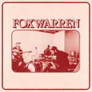
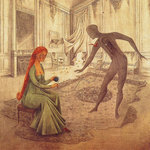

Quick Takes (November 2018)
Welcome to our latest Quick Takes feature!
As usual, our November edition of this feature usually tends to be a bit on the shorter side. It's not necessarily by design, given that the last two months of the year tends to wind down with notable music releases. This month, however, has been one of the busiest in the last few years. Many end-of-year contenders came out in the tail-end of November, many of which, unfortunately, I won't be able to cover. Some of these include albums by Earl Sweatshirt and Jeff Tweedy, though I can say that I enjoyed both in different ways even if I didn't feel particularly compelled to write about them.
I was, however, completely mystified with Marianne Faithfull's sublime Negative Capability. I also wrote some words on Vessel, who's been one of my go-to electronic producers since his release of Order of Noise in 2012. As for the rest, I thought you'd all enjoy new records by pop-punk satirists Art Burt and Andy Shauf's pre-fame project Foxwarren.
Quick Takes will take a short break until early February. We'll be back with our picks for January 2019, but until then, keep your eyes peeled for more great features and, of course, full-length reviews. And it does bear repeating: you can always reach us on Facebook, and on our official twitter page.
...
 Art Brut
Art Brut
Wham! Bang! Pow! Let’s Rock Out!
(Alcopop! Records)
“I got extra life/ I was born again, in a pure white light,” Eddie Argos shouts with effusive candor on Art Burt's return after a seven-year absence, Wham! Bang! Pow! Let's Rock Out! It's something of a playful irony that the ever-so-cheeky Argos succumbed to the comeback album, a concept that he probably would've shrugged off in the past with, well, a rock n' roll song. But the time out of the spotlight has done a lot of good to their brand - with a combination of new and old faces, the new iteration of Art Brut is rhythmically tighter and more robust, less ramshackle, as Argos embraces middle-aged malaise with his charmingly lyrical bluster. He needed some time to refuel, and indeed, he's gathered a new batch of self-referential punk-driven anthems fit for their new phase as a so-called "heritage act." And Argos couldn't be more thrilled with that prospect. [7/10]
Foxwarren
self-titled
(Anti-)
Andy Shauf goes back to where it all should've started with Foxwarren. Before his solo career took off, the Saskatchewan singer-songwriter had vouched to complete an album that was less a short-lived project and more a union between college musician friends. The result from this kinship comes in ten soft rock tracks that share the same biological makeup of Shauf's seventies-informed studio pop. And it's fair to say that some of Foxwarren has an almost eerie resemblance to Shauf's hushed, sunlit arrangements, from the sorrowful, piano-led ballad Lost in the Dream to the waltz-like acoustic twang of Your Small Town. But where these two projects differ is in how Shauf's bandmates add more of an Americana slant, or a "futuristic" approach to it, given how they incorporate skittery drum patterns and slightly-bent synth loops to their winding slide guitar arrangements. It'd be a disservice to name Foxwarren a temporary offshoot, as Shauf and his troupe handle their debut project with an exceptional level of attention and care that points to its potential longevity. [8/10]
 Marianne Faithfull
Marianne Faithfull
Negative Capability
(BMG Rights Mgmt France SARL)
Marianne Faithfull makes a heartfelt summation of her career on Negative Capability. The longstanding pop vocalist's latest, which spans a reputable 50-year span, speaks with a weathered wisdom, where she opposes feelings of antipathy as she reflects on the goodwill that exists within all of us. Accompanied by an exemplary backing band composed of Head and Rob and Warren Ellis, Faithfull reveals her intimate understanding of death and its implications with a mournful, yet restlessly hopeful bearing. But through these elegant, loungy arrangements - some of which are reworkings of classics by Bob Dylan and the Rolling Stones - she remains strong-willed and determined, less fearful of her demise and looking forward to what comes ahead with a brave acceptance. But it's in her original songs like Born to Live, co-written with Ed Harcourt, where she shines, as her dusky vocals provide a lived-in, roughened appearance to an otherwise stark piano ballad. On Negative Capability, she captures John Keats's timeless view on artistic beauty with genuine conviction. [9/10 - Believe the Hype]
Vessel
Queen of Golden Dogs
(Tri Angle)
Sebastian Gainsborough moves out of the darkness with a renewed sense of purpose on his third effort, Queen of Golden Dogs. A quasi-highbrow take on chamber music, Gainsborough (the Bristol producer who goes by the pseudonym Vessel) delivers a blindingly perplexing loose concept on how personal taste challenges us to look outside of our preconceived conventions. Nothing about Queen comes with an easy explanation - Gainsborough makes his point across nine drastically different tracks that range from austere choral performances (Torno-me eles e nau-u) to pitch-bent harpsichord instrumentals (Arcanum). The commonality found in all these disparate ideas comes in how he fabricates them with an incredible sense of physicality, where he combines acidic, loop-based club rhythms over classical instruments as if wanting to smear their origins' air of sophistication. It's also as if Gainsborough is processing his overwhelming emotions in real life, and though his erratic compositions are sometimes too slapdash to bear, his refusal to ever settle is commendable. [7/10]
13 December, 2018 - 22:00 — Juan Edgardo Rodriguez